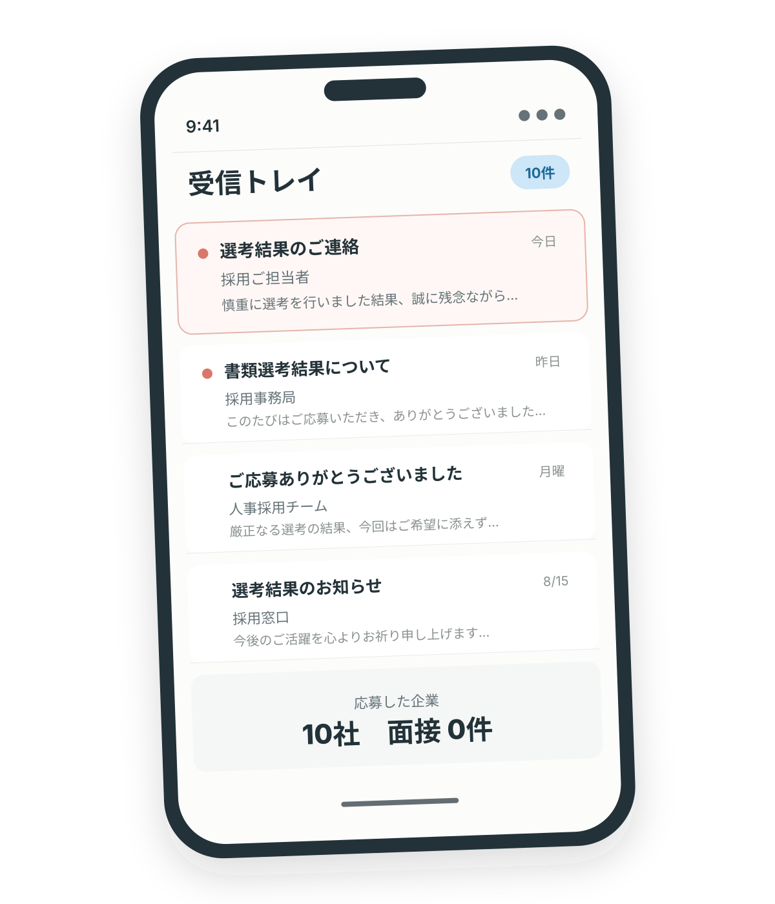

書類で落ちる理由、
正直にお伝えします。
履歴書・職務経歴書を、
採用する側の目で無料診断。
書類を直すべきか。
受ける仕事を変えるべきか。
希望条件を見直すべきか。
あなたの場合を具体的にお伝えします。
福岡の20代転職に強い無理に求人へ応募させることはありません

こんな状態になっていませんか？
原因が分からないまま応募数だけ増やしても、
同じ結果が続く可能性があります。
落ちる原因は、
書類の書き方だけではありません。
書類
経験や強みが伝わっていない
応募先
今の経歴と、受けている仕事が合っていない
希望条件
年収・職種・働き方にズレがある
あなたがどこで止まっているのかを、
はっきりお伝えします。
あなたの場合を、
一般論ではなく具体的にお伝えします。
書類を直せば通る可能性があるのか
受ける仕事を変えるべきなのか
希望条件を見直す必要があるのか
今の経歴なら、どんな仕事を狙うべきか
次の応募までに何を変えるべきか
書類診断結果
診断サンプル／個人情報は含まれていません今回、最初に見直すべきこと
書類だけでなく、応募する職種の見直しが必要です。
経験が業務の羅列になっており、強みと成果が伝わりにくい状態です。
希望職種の必須経験と、これまでの実務経験に差があります。
職種以外の譲れない条件を確認し、応募先の選択肢を整理します。
次の応募までに変えること
- 職務要約を「業務内容」ではなく「できること」から書き直す
- これまでの経験が評価されやすい職種を追加する
- 職種・勤務地・働き方・年収のうち、譲れない条件を決める
この画面は、診断時にお伝えする内容のイメージです。書面での納品を約束するものではありません。また、不採用理由を断定するものではなく、採用側の視点から通りにくい要因を整理するものです。
耳ざわりのいいことだけは言いません。
場合によっては、以下のようなことも正直にお伝えします。
お伝えすることがある内容の例
- 今の希望職種のままでは難しい
- 希望年収を見直した方がよい
- 書類より、応募先の選び方に問題がある
- 今すぐ紹介できる求人がない
『難しい』で終わらせません。
何を変えるべきか。
どこなら可能性があるのか。
次に取るべき行動まで、一緒に整理します。
「憧れの職種」を見直したことで、
ほかの希望条件を残せることがあります。
書類の書き方だけを直すことが、最善とは限りません。
例えば、次のように応募の方向を整理することがあります。
相談前
以前から憧れていた職種を希望していましたが、応募しても書類選考を通過できない状態が続いていました。
お伝えすること
書類と経歴を確認すると、書き方だけでなく、希望職種で求められる実務経験との間に差がありました。
ご本人も薄々感じていた「憧れだけでは通りにくい」という点を、人格や経験を否定せず、理由とともに率直にお伝えします。
見直すこと
職種への憧れだけに固執せず、これまでの経験が評価されやすい職種へ応募先を広げます。
一方で、勤務地・働き方など、その他の譲れない条件は整理して残します。
目指せる状態
経験を評価されやすい職種を選ぶことで、その他の希望条件を満たす企業も選択肢に入れられる状態を目指します。
これは診断後に考えられる選択肢を示した支援イメージです。転職や入社の結果を保証するものではありません。
個人が特定されないよう一部編集しています。
求職者だけでなく、
採用する企業も支援しているからです。
AIKASUは、求人を紹介するだけの会社ではありません。企業の採用要件づくりや、書類選考、面接、採用活動の改善にも関わっています。
企業が書類のどこを見て、
「会ってみたい」
「今回は見送る」
と判断するのか。
その採用側の視点から、あなたの書類を確認します。
動画で見る:AIKASUが福岡の転職に強い理由
利用はかんたんです。
無料診断に申し込む
下記のボタンよりお申し込みください
履歴書・職務経歴書を送る
PDF・写真・スクリーンショットでも送付可能
診断結果を聞く
オンラインで診断結果をお伝えします
希望者のみ、次へ進む
書類修正や求人紹介に進むかは選べます
申込先が決まり次第、このエリアから直接お申し込みいただけるようになります。今しばらくお待ちください。
よくある質問
書類診断に費用はかかりません。診断後に求人へ応募する場合も、求職者から紹介料金をいただくことはありません。
いいえ。診断結果を聞くだけでも問題ありません。無理に求人への応募を勧めることはありません。
現状は率直にお伝えしますが、人格やこれまでの経験を否定することはありません。次に何を変えればよいかまで一緒に整理します。
診断内容や転職活動について、現在の勤務先へ連絡することはありません。
お預かりした情報は、書類診断および希望された転職支援の目的でのみ利用します。
ご希望と経歴を確認し、現時点で紹介が難しい場合はその旨を正直にお伝えします。その上で、条件の見直しや次に取るべき行動をご提案します。